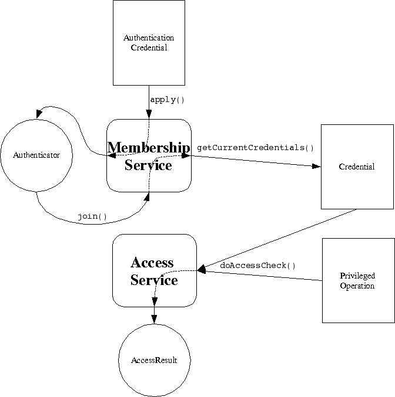

The Membership Service allows a peer to establish an identity within a peer
group. A peer have any number of identities at one time. Once an identity
has been established a credential object is available which allows the peer
to prove that it rightfully has that identity. Applications and services
may restrict certain operations to specific identities. JXTA J2SE provides
the Access Service to assist applications in matching privledges to
identities.
The Membership Service is not associated with a particular JXTA
protocol. Each Membership Service implementation is responsible for its own
protocol definition (if any). This approach is used primarily so that JXTA
bridges well to existing common Membership and Access technologies. For
example; PKI, Kerberos, NTLM and API based interfaces such as PAM and JAAS.

@see net.jxta.credential.Credential
@see net.jxta.credential.AuthenticationCredential
@see net.jxta.access.AccessService
@see JXTA Protocols Specification : Protocols